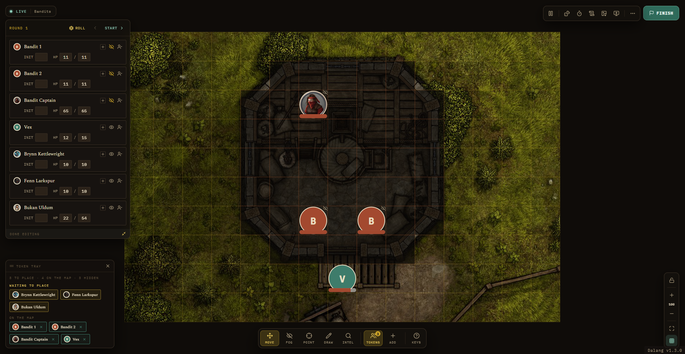
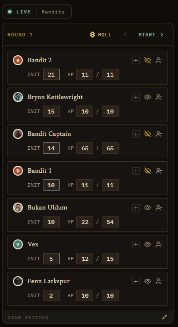
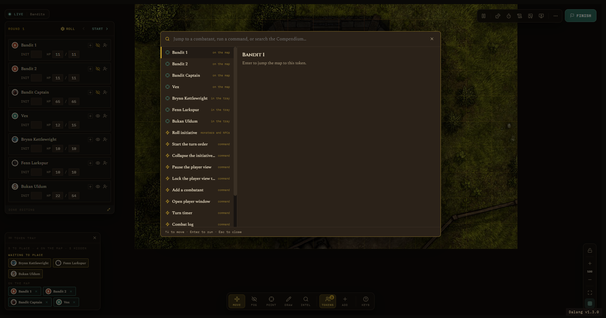
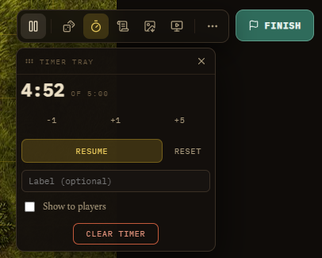
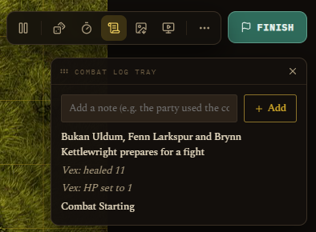
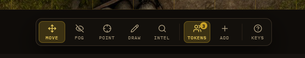
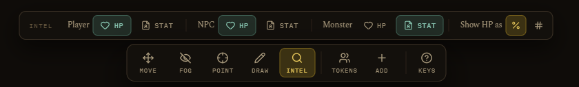
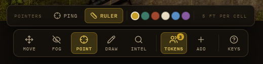
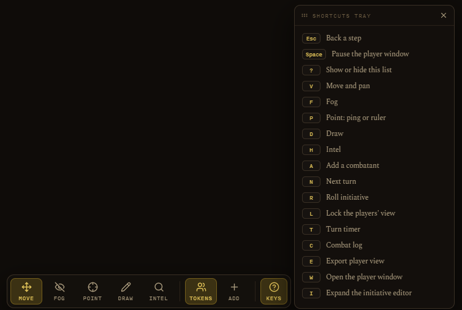

Running a Live Session
Running a Session · Running a Live Session
On this page Starting a run During combat or exploration Map tools Ending a run
Open the Active Campaign tab. If nothing's running, you'll see the hub screen: current location, party present, prepared encounters for this location, maps, NPCs present, active quests, and a quick "Log This Moment" box for jotting things down as they happen without leaving the tab. If the current location has no background image of its own, the hub falls back to the campaign's own background image (set in Campaign Settings) instead of going flat.
Starting a run
Two ways to begin:
- Start on a prepared (or ad-hoc) encounter. This snapshots the party and monster placements, rolls initiative automatically for monsters and NPCs, and resets that map's fog to whatever you set as the baseline.
- Explore on a map, for scenes without combat. No initiative, no HP tracking. If the party already explored this map before, it resumes wherever they left off, positions carry over between sessions.
You can start an encounter mid-exploration too, the app will ask you to confirm and logs the interruption automatically.

During combat or exploration
Starting a run takes you straight to a fullscreen battle map, there's no separate scaffolded layout to click through first. Everything lives in the chrome around the map itself:
- Top left: a read-only status line (LIVE, PAUSED, or EXPLORING, plus the run's name).
- Top right: the session rail, pause the Player Window, roll dice, the turn timer, a Combat Log tray (an Exploration Log tray while exploring, it writes straight to the Event Log), Export Player View, Open Player Window, a "..." menu (Back to Active Campaign, which leaves the run going so you can check a quest or NPC, Reset to prep, Abandon), and a Finish button.
- Left: the turn order. Expand it into a full Initiative tray, editing initiative, HP, conditions, and hide-from-players per combatant, with a Remove button, right there instead of opening each token's popup.
- Bottom left: the token tray, showing how many combatants (players, monsters, NPCs, or homebrew stat blocks) are still waiting to be placed.
- Bottom right: zoom, fit, grid on or off, and the player-view lock. Toggling the grid here also shows or hides it on the Player Window and the web player link, not just your own screen.
- Ctrl+K opens a combined palette: type a combatant's name to jump the camera to them, or a command (roll initiative, next turn, pause, add a combatant, timer, open the player window, finish). It still searches the Compendium too, see Dice Roller for the dice tray it's often paired with.
A reinforcement added mid-fight rolls its own initiative right away and slots into the order (a player character stays blank for you to type in their reported roll).



Click any token to get a small popup with quick actions (nudge HP, hide from players, lock its position, remove from the fight) and a button into the full Quick-Info view (HP, conditions, concentration toggle, stat block for SRD and homebrew monsters, and for any NPC linked to one, or a character card for a player character).

If a monster shows up without a portrait, an unplanned random encounter, something pulled off a table mid-session, you don't have to leave the Battle Map to fix it. Open its Quick-Info popup and click Edit Portrait right above the stat block, paste a URL or Browse to a local file, same as everywhere else. It updates that monster everywhere it's placed, not just the one token you clicked.

There's also a DM-controlled turn timer: set it, start, pause, adjust, label it, and choose whether players see it on the Player Window and web player link. It runs on its own clock, independent of the turn order.


Map tools during a run
A command bar sits across the bottom centre of the map, with the current tool's own options in a strip directly above it. Hover a tool for its keyboard shortcut, hover that strip's own label for the fuller how-to. Clicking the active tool again closes its strip and drops you back to Move.
- Move: the default, drag tokens around, they snap to the grid. You can also drag a combatant straight from the token tray onto the map no matter which tool is selected.
- Fog: Reveal or Hide cells live as the party explores, plus Reveal All and Cover All, both ask for confirmation first.
- Point: pick Ping (pulses a spot for everyone watching, including the Player Window, fades a few seconds after) or Ruler (measures real distance in feet, same fade). Both share a color swatch, pick a color and it applies to your next ping or ruler measurement everywhere it shows.
- Draw: pen, line, rectangle, circle, or cone, useful for marking spell areas or sketching a rough plan. Unlike Point, drawings stick around until you clear them.
- Intel: what players get to see and know. Per category, Player, NPC, Monster, an HP toggle (visible to players or not) and a Stat toggle (lets a player click that kind of token to see its full read-only stat block, off by default for NPCs since it shows the linked stat block to everyone). A Show HP as choice switches every shown HP display between a plain bar and the bar plus an exact number.



Other keyboard shortcuts: A to add a combatant, N for next turn, R to roll initiative, L to lock the player view, Space to pause, ? to open the Shortcuts tray. During a run: T for the turn timer, C for the combat log, E to export the player view, W to open the player window, I to expand the initiative editor. Escape steps back one level at a time, close an open menu or tray first, then back to Move, then back to the campaign board, never while a confirmation dialog is open.

See also: The Player Window, which mirrors all of this live to players.
Ending a run
Finish (or End Exploration) writes one entry to the permanent Event Log. You can add a summary, or leave it blank for an auto-generated note. If you just want to bail without any record at all, there's a separate, quieter Abandon run (or Abandon exploration) link in the "..." menu.